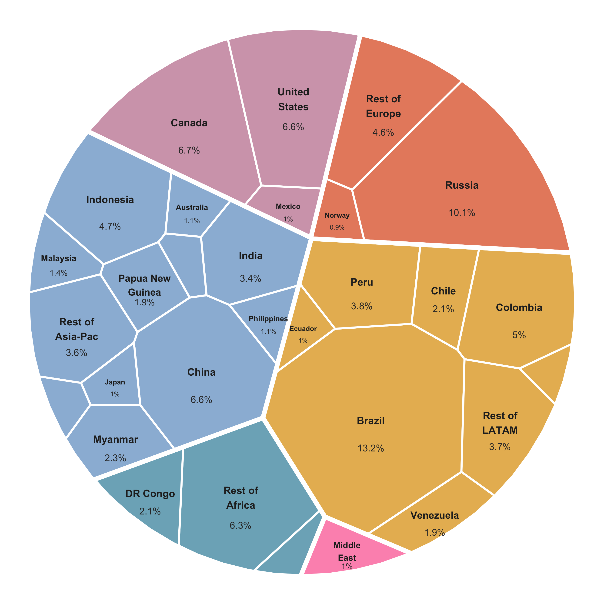
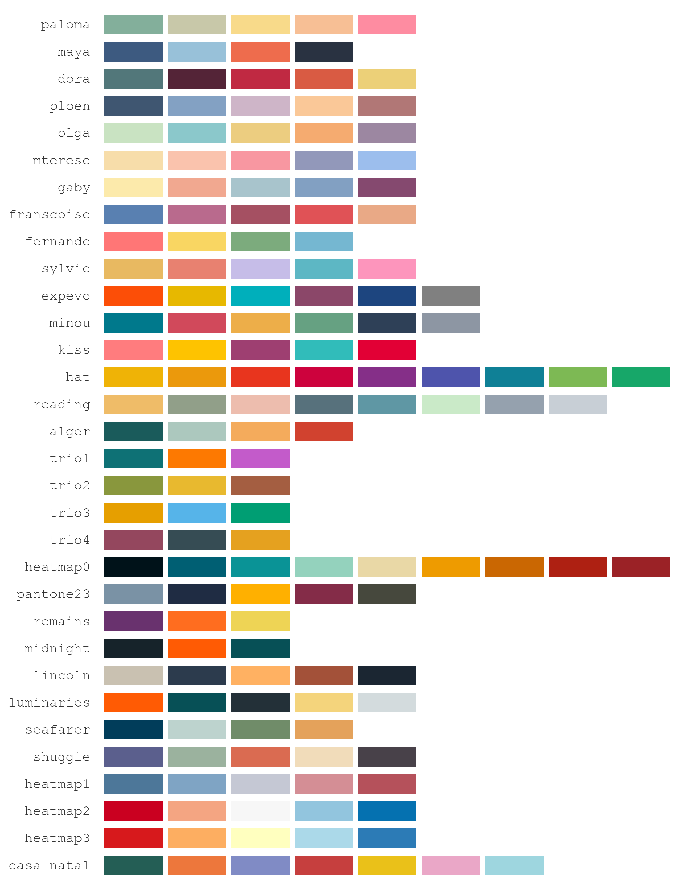
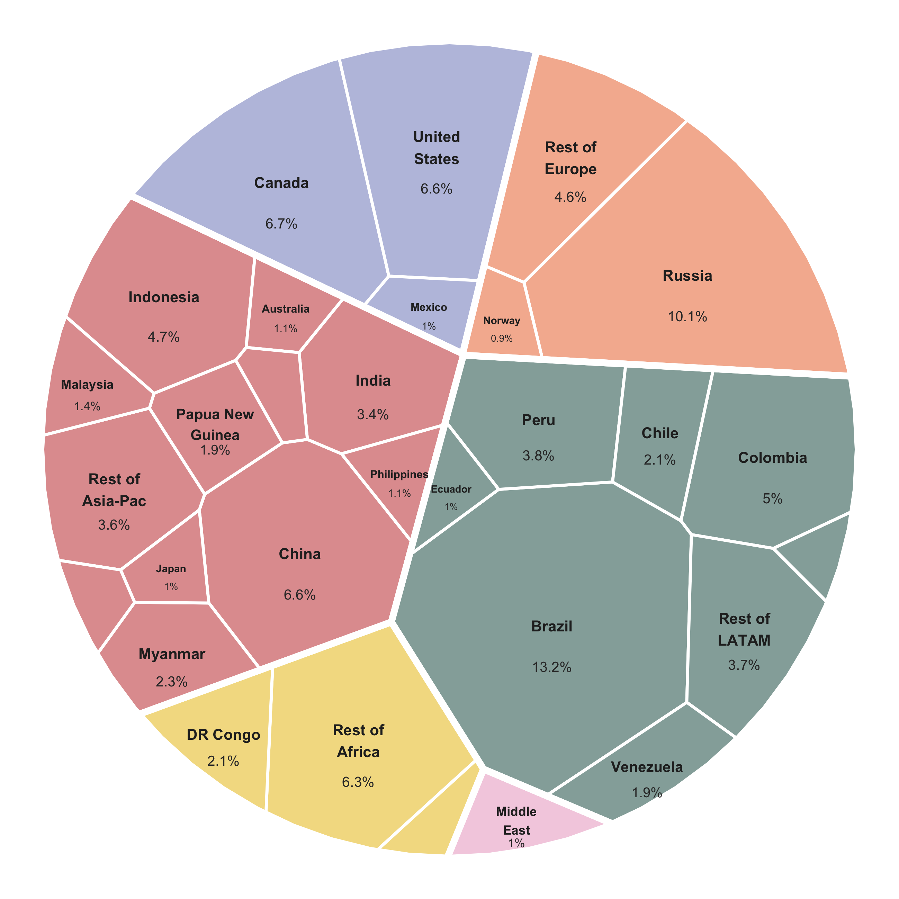

Voronoi Map Treemaps for ggplot2
ggvmap partitions a convex polygon into cells whose areas are proportional to data weights — a Voronoi treemap. It implements the Nocaj & Brandes (2012) iterative power-diagram algorithm in pure R (no compiled code, no CGAL, no JavaScript) with first-class ggplot2 integration: hierarchical (grouped) layouts, annotation rings, flags, value labels, 32 built-in colour palettes, and interactive hover maps.
Installation
ggvmap is pure R with a single hard dependency (ggplot2) — no compilation, no system libraries. Install the latest version from GitHub: 
# with remotes (lightweight)
install.packages("remotes")
remotes::install_github("loukesio/ggvmap")
# ...or with devtools
devtools::install_github("loukesio/ggvmap")To install a specific release, append its tag:
remotes::install_github("loukesio/ggvmap@v0.3.0")Some features use optional packages — install the ones you need:
install.packages(c(
"ggimage", # vm_add_flags(), vm_add_images()
"ggiraph", # interactive = TRUE + vm_girafe()
"geomtextpath", # curved ring labels
"ggtext", # markdown titles
"showtext" # custom fonts
))Then load it like any package:
The one-glance demo
Everything below is drawn from one bundled dataset — data(freshwater), each country’s share of global renewable freshwater (FAO Aquastat via World Bank, 2022):
library(ggvmap)
data(freshwater)
vm <- voronoi_map(freshwater$share, labels = freshwater$country,
group = freshwater$region, clip = clip_circle(),
seed = 5, max_iter = 80)
ggvmap(vm, palette = "casa_natal", autoscale = TRUE, min_area = 0.009,
wrap = 10, fontface = c(Brazil = "bold")) |>
vm_add_labels(fmt = \(v) paste0(v, "%"), autoscale = TRUE,
min_area = 0.009) |>
vm_add_ring(style = "arc", palette = "casa_natal", values = TRUE)
The full script is examples/freshwater_tour.R.
Quick start
ggvmap() computes and plots in one call — give it weights, or a precomputed voronoi_map object:
library(ggvmap)
data(freshwater)
top10 <- freshwater[!grepl("^Rest of|Middle East", freshwater$country), ][1:10, ]
ggvmap(top10$share, labels = top10$country, palette = "minou", seed = 42)
For anything beyond a quick look, the recommended workflow is two steps — compute the layout with voronoi_map(), check it, then plot — explained next. Every function below follows the same pattern: what it is for, the arguments that matter (with their defaults), and a worked example. Each example uses a different built-in palette, named in its code.
The functions
voronoi_map() — compute the layout, then check it
What it’s for: turning a weight vector into the tessellation. This is the expensive, seed-dependent step; everything else (plotting, labels, rings) is cheap decoration on the object it returns.
| Argument | Default | What it does |
|---|---|---|
weights |
— | The numeric values; each cell’s area will be proportional to its weight |
labels |
NULL |
Cell names; also the names that per-cell arguments match against |
group |
NULL |
Grouping vector — makes the layout hierarchical (one sector per group) |
clip |
clip_square() |
The boundary polygon; any convex shape (see the shapes below) |
seed |
NULL |
Random seed for the initial site placement — set it for reproducibility |
convergence_ratio |
0.01 |
Stop when total area error falls below this fraction (1%) |
max_iter |
200 |
Iteration budget; the layout stops here even if not converged |
The layout is an iterative optimisation with a finite budget, so it can stop before cell areas match the data — and an unconverged map still renders and looks plausible. That is why you print the object before trusting any plot of it:
vm <- voronoi_map(freshwater$share, labels = freshwater$country,
group = freshwater$region, clip = clip_circle(),
seed = 5, max_iter = 80)
vm
#> Voronoi Map
#> hierarchical | 6 groups | 30 cells
#> 30 cells | 17 iterations | convergence: 1.509%
#> Converged: TRUEConverged: TRUE means the areas faithfully represent the weights; the convergence percentage is the residual area error, and the iteration count shows how much of the budget was used. If Converged is FALSE, raise max_iter or try another seed — never publish an unconverged map.
clip_*() — the boundary shapes
What they’re for: the same weights fill any convex polygon with area-true cells, so the outline is a free design choice. Ten constructors: clip_square(), clip_circle(), clip_hexagon(), clip_diamond(), clip_triangle(), clip_pentagon(), clip_octagon(), clip_rectangle(w, h), clip_ellipse(rx, ry), and the general regular_polygon(n). Each panel below also names the palette it uses:

ggvmap() — render the map
What it’s for: turning the layout into a ggplot. Everything about the map level — colours, which labels appear and how they behave — is decided here.
| Argument | Default | What it does |
|---|---|---|
palette |
"Okabe-Ito" |
A palette name (see the palette section), colour vector, or hcl.colors() name |
autoscale |
FALSE |
Shrink labels in small cells (down to 60% of label_size) |
min_area |
0 |
Hide labels of cells below this fraction of the map area |
wrap |
NULL |
Wrap long names at this many characters (e.g. wrap = 10) |
label_size |
3 |
Text size; also takes a vector named by cell: c(Brazil = 5)
|
label_col |
"white" |
Text colour; also named-by-cell |
fontface |
"bold" |
Face; also named-by-cell ("plain", "italic", "bold.italic") |
fill_by |
NULL |
"data_weight" fills by value instead of by group — see continuous fill |
legend |
FALSE |
Show the fill legend |
interactive |
FALSE |
Build ggiraph-interactive cells — see the interactive section |
The three label arguments above solve the problem every real dataset has — a long tail of tiny cells and a few long names:
ggvmap(vm, palette = "paloma", label_col = "grey15",
autoscale = TRUE, min_area = 0.009, wrap = 10)
autoscale shrinks a label in proportion to the square root of its cell’s area relative to the median cell — so text in the bigger half of the map all stays at full size (area encodes the value; the font does not re-encode it), and only genuinely small cells shrink, floored at 60% so they stay legible. Below min_area, labels disappear entirely.
vm_add_labels() — value labels under the names
What it’s for: printing each cell’s value (by default its weight) beneath the name, with free-form formatting.
| Argument | Default | What it does |
|---|---|---|
fmt |
NULL |
Formatting function, e.g. \(v) paste0(v, "%")
|
size |
2.8 |
Text size; also named-by-cell |
col |
"grey20" |
Colour; also named-by-cell |
autoscale, min_area
|
FALSE, 0
|
Same meaning as in ggvmap() — use the same min_area in both, or hidden names leave orphaned values behind |
cells |
NULL |
Restrict to specific cells |
value |
weights | Label a different variable than the weights |
ggvmap(vm, palette = "sylvie", label_col = "grey15",
autoscale = TRUE, min_area = 0.009, wrap = 10) |>
vm_add_labels(fmt = \(v) paste0(v, "%"), autoscale = TRUE,
min_area = 0.009)
vm_add_ring() — label the groups without a legend
What it’s for: wrapping a circular map in a group-aligned annotation ring, so the reader learns the groups from the map’s edge instead of a detached legend.
| Argument | Default | What it does |
|---|---|---|
style |
"band" |
"band" = filled ring segments; "arc" = thin line, label in a gap |
values |
FALSE |
Append each group’s share to its label (“LATAM · 31%”) |
label_size |
3.2 |
Ring label text size (the gap in the arc scales with it) |
colors |
NULL |
Override segment colours: one colour, or a vector named by group |
width |
0.1 |
Band thickness (band style) |
offset |
0.06 |
Distance of the arc from the map edge (arc style) |
The filled band:
ggvmap(vm, palette = "gaby", label_col = "grey15",
autoscale = TRUE, min_area = 0.009, wrap = 10) |>
vm_add_ring(style = "band", palette = "gaby", width = 0.11)
The thin arc, with values. Every label sits in a gap broken into the ring; a label wider than its own segment (here “Middle East · 1%”) cuts its gap into the neighbouring arcs too, so it never collides with them:
ggvmap(vm, palette = "fernande", label_col = "grey15",
autoscale = TRUE, min_area = 0.009, wrap = 10) |>
vm_add_ring(style = "arc", palette = "fernande", values = TRUE)
And with colors = overriding the palette — one uniform dark ring:
ggvmap(vm, palette = "reading", label_col = "grey15",
autoscale = TRUE, min_area = 0.009, wrap = 10) |>
vm_add_ring(style = "arc", colors = "#333333", values = TRUE)
Emphasis — any argument, one cell at a time
What it’s for: highlighting one cell or one group without touching the data. label_size, label_col, fontface (per cell) and group_border_col (per group) all accept vectors named by cell or group; anything unnamed keeps the default. label_cells / cells restrict which cells get labels at all:
ggvmap(vm, palette = "shuggie",
label_cells = c("Brazil", "Russia", "Canada"),
label_size = c(Brazil = 5),
label_col = c(Brazil = "grey95", Russia = "grey15",
Canada = "grey15"),
fontface = c(Brazil = "bold.italic"),
group_border_col = c(LATAM = "#333333")) |>
vm_add_labels(fmt = \(v) paste0(v, "%"),
cells = c("Brazil", "Russia", "Canada"),
col = c(Brazil = "grey85"))
vm_palettes() — the built-in colours
What it’s for: every palette = argument accepts, by name, all 32 palettes of the ltc package (vendored — ltc need not be installed). Names match case-insensitively and ignore spaces, underscores and dashes, so "casa_natal", "Casa Natal" and "casanatal" are the same palette. vm_palettes() returns them all as a named list:
names(vm_palettes()) # all 32 names
vm_palettes()$dora # the hex colours of one palette
Beyond the names, palette = takes any colour vector, so two tricks come free. Softer fills: wrap the palette in ggplot2::alpha() and switch the labels to a dark colour:
ggvmap(vm, palette = ggplot2::alpha(vm_palettes()$casa_natal, 0.55),
label_col = "grey15", autoscale = TRUE, min_area = 0.009,
wrap = 10) |>
vm_add_labels(fmt = \(v) paste0(v, "%"), autoscale = TRUE,
min_area = 0.009)
Continuous fill: fill_by = "data_weight" colours each cell by its value, restating area as colour. The heatmap0–heatmap3 palettes are ordered ramps (always interpolated end-to-end), which makes them the natural choice here — a qualitative palette would imply categories that don’t exist. With a ramp that reaches very dark or very light, pair it with a matching label_col; the mid-tone heatmap1 keeps dark text readable everywhere:
ggvmap(vm, fill_by = "data_weight", palette = "heatmap1",
label_col = "grey15", autoscale = TRUE, min_area = 0.009,
wrap = 10, legend = TRUE)
vm_add_flags() and vm_add_images() — pictures in cells
What they’re for: vm_add_flags() resolves country names (English or German) to national flags via the ggimage package and places them at the cell centroids; vm_add_images() does the same with any image files or URLs. Key arguments: size (fraction of the plot, default 0.045), nudge_y to sit the flag above the label, cells to restrict. The helpers country_to_iso(), flag_url() and flag_cache() are exported for custom use:
ggvmap(top10$share, labels = top10$country, clip = clip_circle(),
palette = "seafarer", label_col = "grey15", seed = 42) |>
vm_add_labels(fmt = \(v) paste0(v, "%")) |>
vm_add_flags(size = 0.05, nudge_y = 0.055)
Titles and fonts
A ggvmap plot is a ggplot, so titles, themes and the wider ggplot2 ecosystem apply unchanged:
ggvmap(top10$share, labels = top10$country, palette = "dora", seed = 42) +
ggplot2::ggtitle("Countries with the most freshwater",
subtitle = "Share of global renewable freshwater, 2022") +
ggplot2::theme(plot.title = ggplot2::element_text(face = "bold", hjust = 0.5),
plot.subtitle = ggplot2::element_text(colour = "grey40",
hjust = 0.5))
With ggtext, titles take markdown — handy for colour-coding words to the map instead of using a legend:
library(ggtext)
ggvmap(top10$share, labels = top10$country, palette = "luminaries", seed = 42) +
ggplot2::labs(title = paste0(
"**<span style='color:#FF5B04;'>Brazil</span> holds more freshwater ",
"than any other country**")) +
ggplot2::theme(plot.title = element_markdown(hjust = 0.5, size = 13))
Every text layer accepts a family =, so custom fonts (e.g. loaded with showtext) apply directly — no update_geom_defaults() workaround:
library(showtext)
font_add_google("Bitter", "bitter")
showtext_auto()
ggvmap(top10$share, labels = top10$country, palette = "olga",
family = "bitter", seed = 42) |>
vm_add_labels(fmt = \(v) paste0(v, "%"), family = "bitter")
vm_girafe() — interactive maps
What it’s for: hover highlighting and tooltips in HTML output (R Markdown, Shiny, pkgdown) via ggiraph. Build the plot with ggvmap(interactive = TRUE), then render the widget with vm_girafe() (key arguments: width_svg/height_svg in inches, hover_css for the highlight style):

Live version (hover it yourself) in the Interactive article.
vm_as_df() and vm_centroids() — take the data with you
What they’re for: escaping the helpers entirely. vm_as_df() returns the tessellation as a tidy data frame (one row per polygon vertex, with cell label, group, weight, and area), and vm_centroids() one row per cell centre — both ready for hand-rolled geom_polygon() / geom_text() layers when you need something the vm_* verbs don’t do:
df <- vm_as_df(vm)
head(df)
vm_centroids(vm)Saving your map
Two independent knobs control a saved PNG, and confusing them is the #1 source of “why are my letters tiny / why is everything overlapping”:
-
width/heightin pixels = how big (and how sharp) the image is. -
dpi= how big the letters are relative to the map. More dpi = bigger text, same pixels.
ggsave("map.png", p, width = 2600, height = 2600, units = "px",
dpi = 350, bg = "white")Rules of thumb:
- Square canvas for circular maps — on a wide rectangle the circle is limited by the height and the rest is wasted margin.
- Letters too small → raise
dpia notch (350 → 400). Labels overlapping → lower it. The pixel size never changes. -
bg = "white"— otherwise the PNG is transparent, which some viewers display as black. - For print/journals, save a vector format instead —
ggsave("map.pdf")— which has no resolution at all.
How it works
The algorithm is like a room full of balloons: each balloon wants to claim space proportional to its importance. Every iteration, each balloon drifts toward the centre of its current territory (position adaptation) and inflates or deflates to grab the right amount of area (weight adaptation). After enough rounds, the room is perfectly partitioned.
Under the hood, it’s an iterative power diagram (weighted Voronoi tessellation) following:
Nocaj, A. & Brandes, U. (2012). “Computing Voronoi Treemaps — Faster, Simpler, and Resolution-independent.” Computer Graphics Forum, 31(3), 855–864. doi:10.1111/j.1467-8659.2012.03078.x
Is it correct?
Yes — and it’s verified. The tessellation is an exact power diagram (to floating-point precision): cells satisfy the defining minimum-power-distance property, tile the domain with no gaps or overlaps, are all convex, and the hierarchical layout is a valid nested power diagram. These invariants are enforced by tests/testthat/test-correctness.R and explained in the Correctness article.
Example gallery
More worked examples (with code) live in examples/ — grouped layouts, custom rings, flags on different shapes, and a combined infographic.
API reference
| Function | Purpose |
|---|---|
voronoi_map() |
Core computation (add group = for a hierarchical layout); print it to check convergence |
ggvmap() |
The main ggplot2 visualisation (autoscale, min_area, wrap, per-cell label_size / label_col / fontface, fill_by, family) |
autoplot() |
Alias for ggvmap() via the ggplot2 generic |
plot() |
Base R visualisation |
vm_add_ring() |
Outer annotation ring: style = "band" or "arc" (with values, colors, label_size, offset) |
vm_add_flags() |
Add country flags at cell centroids |
vm_add_images() |
Add arbitrary images at cell centroids |
vm_add_labels() |
Add value labels (fmt, inside, autoscale, min_area, per-cell size / col) |
vm_girafe() |
Render an interactive = TRUE plot as a hoverable widget |
vm_palettes() |
List the 32 built-in colour palettes |
vm_as_df() / vm_centroids()
|
Tidy data frame / centroids |
country_to_iso() / flag_url() / flag_cache()
|
Flag helpers |
clip_square() / clip_hexagon() / clip_circle() / clip_diamond() / regular_polygon()
|
Boundary shapes |
Comparison with other R packages
| Feature | ggvmap | voronoiTreemap | WeightedTreemaps |
|---|---|---|---|
| Backend | Pure R | D3.js (htmlwidget) | C++ / CGAL |
| ggplot2 native | ✅ | ❌ | ❌ |
| Dependencies | ggplot2 only | htmlwidgets, d3 | RcppCGAL |
| Hierarchical | ✅ (grouped) | ✅ | ✅ |
| Annotation ring / flags | ✅ | ❌ | ❌ |
| Custom shapes | ✅ any convex | ✅ | ✅ |
| Install complexity | Trivial | Medium | Hard (CGAL) |
Acknowledgements
This package started from the Stack Overflow question Make a circular Voronoi diagram in R, and owes a lot to the inspiration of Allan Cameron’s answer there — thank you, Allan.
ggvmap pairs naturally with its sibling packages ltc (the colour palettes) and ggsynteny (synteny plots).
License
MIT © 2026 Loukas Theodosiou — see LICENSE.md for the full text. (The two-line LICENSE file is the CRAN-required stub that points to the same terms.)